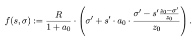

Pool reward calculation example (per epoch)

Parameters
Intermediate results
z0 [1/k] = ? (max cap share)
o' [min(o,z0)] = ? (capped pool share)
s' [min(s,z0)] = ? (capped leader share)
A [(z0 - o') / z0] = ?
B [s' * A] = ?
C [o' - B] = ?
D [C / z0] = ?
E [s' * a0 * D] = ?
F [o' + E] = ?
G [R / (1 + a0)] = ?
H [G * F] = ? (final result)
Charting